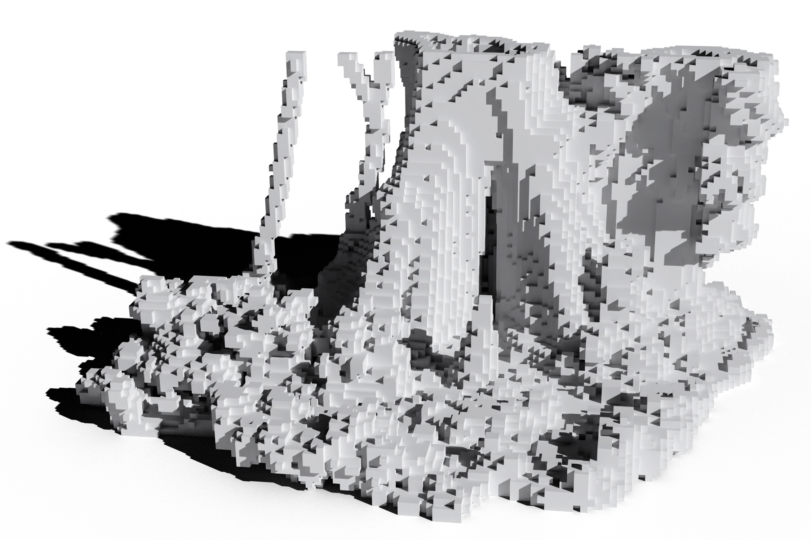
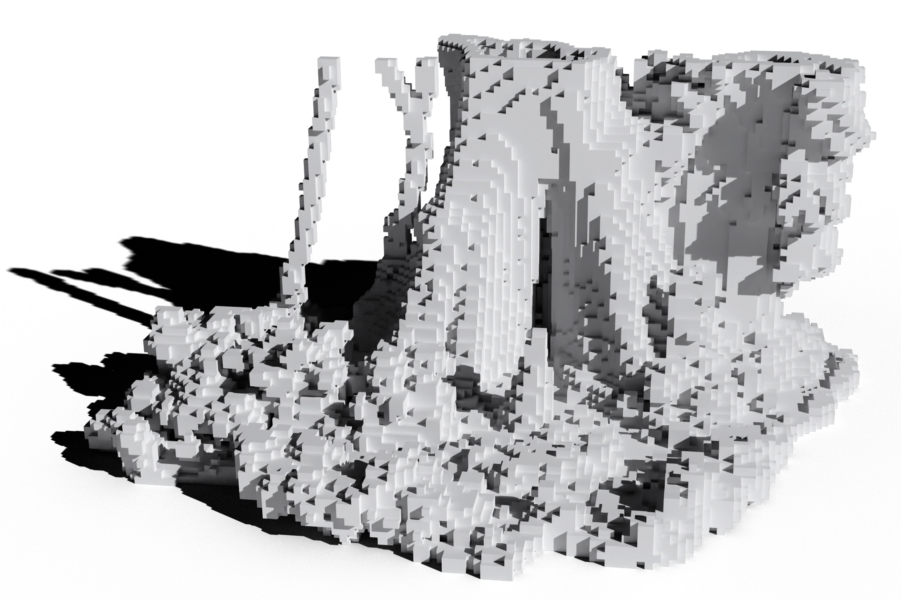

Computational Ecology
for Landscape Architects
Brendan Harmon

Heritage Preservation


Rosedown
African American Burial Grounds
Point Clouds
Point Cloud Modeling
Computational Ecology
Drone Data Analytics
Atlas of Heritage Trees
 



Robotics
Ecological Robotics
Future Research
-
Project: Field robotics
-
Paper Computational aesthetics
-
Book: Computational Ecology
-
GIS plugin: earthworks and mass flows of water and sediment
-
Grasshopper plugin: point cloud modeling
-
Grasshopper plugin: geospatial modeling and simulation